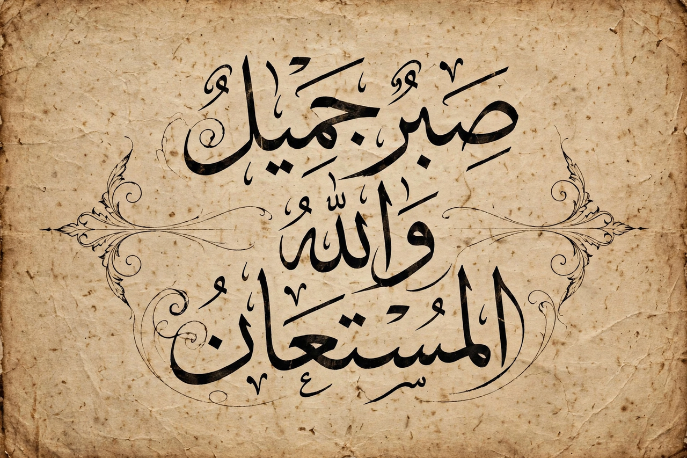

Abjad

| Abjad | |
| Type | Writing system (consonantal alphabet) |
|---|---|
| Examples | Arabic, Hebrew, Phoenician, Aramaic, Syriac |
| Term coined by | Peter T. Daniels (1990) |
An abjad is a type of writing system in which only consonants are regularly written and vowels are left to be inferred by the reader, or indicated optionally with diacritics. The term, proposed by the linguist Peter T. Daniels in 1990, is derived from the first four letters of the Arabic script in one of its traditional orders: ʾa-b-j-d.
All known abjads belong to the Semitic family of scripts. They suit the morphology of Semitic languages, in which words are built on consonantal roots — typically three consonants — whose vowels vary according to grammatical pattern. A reader who knows the language can usually supply the vowels from context.
Impure abjads
Some scripts, such as Arabic and Hebrew, use certain consonant letters to indicate long vowels (the matres lectionis, "mothers of reading") and possess optional vowel diacritics — Arabic ḥarakāt and Hebrew niqqud — used in the Qur'an, children's books, and dictionaries. Such systems are sometimes called "impure abjads".
Comparison with other systems
An abjad differs from an alphabet proper (Greek, Latin, Cyrillic), where vowels have independent letters of equal status; from an abugida (such as Devanagari or Ethiopic), where each consonant letter carries an inherent vowel that is modified by diacritics; and from a syllabary (such as Japanese kana), where each sign represents a full syllable.
History
The first abjad was the Proto-Sinaitic script of the second millennium BC. Its descendant, the Phoenician alphabet of 22 consonant signs, spread around the Mediterranean and Near East, giving rise to the Hebrew, Aramaic, and Arabic scripts, while the Ugaritic cuneiform abjad at Ugarit represents an earlier, independent adaptation of the principle to wedge-shaped writing.